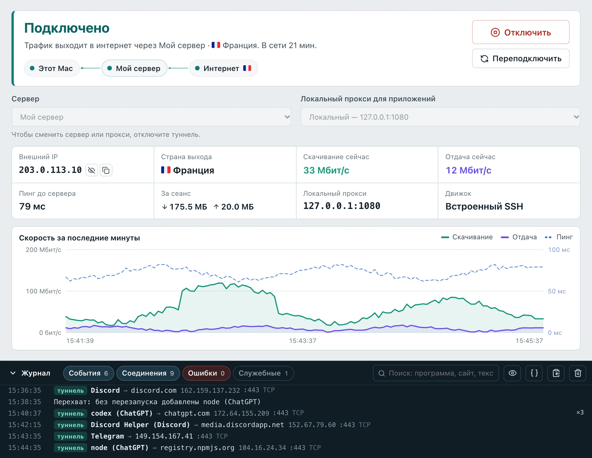
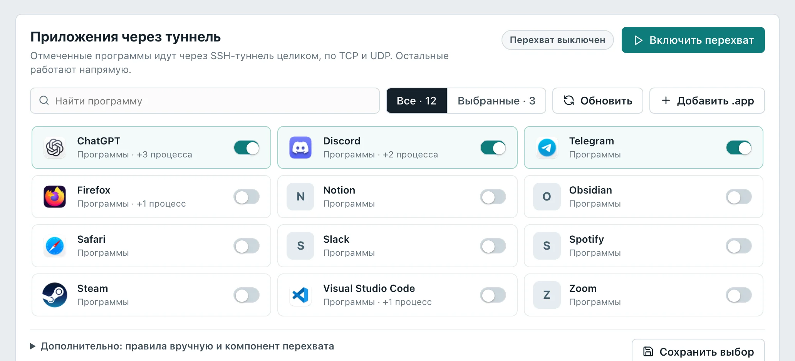
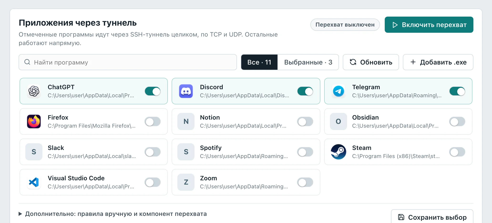
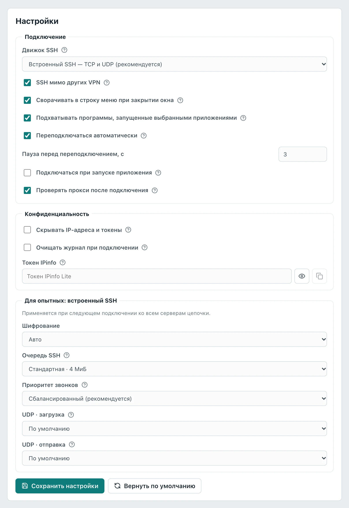
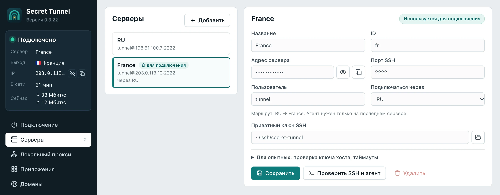
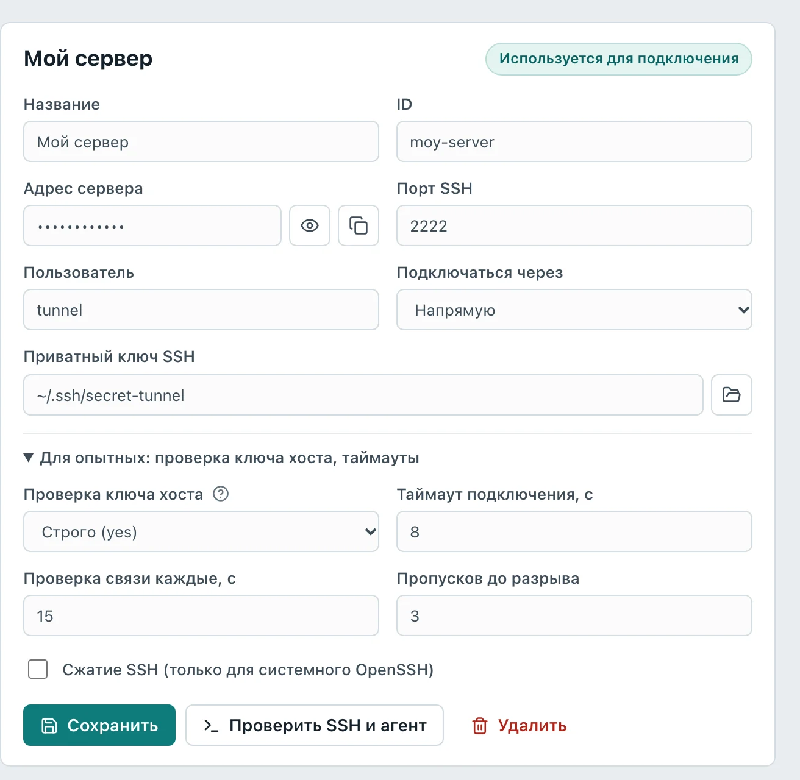

От сервера, который хостер выдал с паролем root, до программ, которые ходят в интернет через него. Выберите свою систему и впишите адрес сервера в поле «Адрес сервера от хостера» — команды подстроятся. Займёт около 30 минут.
Сервер (VPS) на Linux x86_64: Ubuntu 22.04 или 24.04, Debian 11 или 12. Хватит самого простого тарифа. Страна сервера — страна, из которой вы будете выходить в интернет.
Данные от хостера: IP-адрес, логин (обычно root) и пароль. Обычно они приходят письмом или лежат в панели управления.
Компьютер: macOS 15 или новее, Windows 10 или 11. Для Linux приложения пока нет, но сервер с Linux настраивается так же, как с macOS, — шаги 1–7.
Мы сделаем на сервере четыре вещи: вход по ключу вместо пароля, отдельного пользователя tunnel для туннеля, порт SSH 2222 вместо стандартного 22 и небольшой агент, через который пойдёт трафик.
Во всех командах вместо 203.0.113.10 должен стоять адрес вашего сервера. Впишите его в поле «Адрес сервера от хостера», и он подставится сам.
Терминал — окно, в которое вводят команды. Все команды этой инструкции копируются кнопкой «Копировать» и вставляются в терминал целиком.
Нажмите ⌘ + Пробел, наберите «Терминал» и нажмите Enter. Или откройте Finder → «Программы» → «Утилиты» → «Терминал».
Терминал
>_ТерминалПрограммы
Поиск Spotlight: наберите «Терминал» и нажмите Enter.
Вставить скопированную команду — ⌘ + V, выполнить — Enter.
Нажмите правой кнопкой мыши на «Пуск» (или Win + X) и выберите «Терминал». В Windows 10 этот пункт называется «Windows PowerShell». Права администратора для этих шагов не нужны.
Приложения и возможностиДиспетчер устройствСетевые подключенияТерминалТерминал (администратор)Диспетчер задачПараметрыПроводник⊞ Пуск
Меню правой кнопки на «Пуск» в Windows 11.
Вставить команду — Ctrl + V или правая кнопка мыши, выполнить — Enter. Если в начале строки нет PS, у вас командная строка, а не PowerShell: откройте «Терминал» ещё раз и выберите вкладку Windows PowerShell.
Нажмите Ctrl + Alt + T или найдите «Терминал» в меню приложений.
Первый вход нужен, чтобы компьютер запомнил сервер. Выполните:
ssh root@203.0.113.10
ТерминалWindows PowerShellТерминал
$ssh root@203.0.113.10The authenticity of host '203.0.113.10' can't be established.
ED25519 key fingerprint is SHA256:Xv3nU9TcY0k1bWq4mD7hFZr2pL8sJeA6oN5gKiQwHcE.
Are you sure you want to continue connecting (yes/no/[fingerprint])?yes← напишите yes и нажмите EnterWarning: Permanently added '203.0.113.10' (ED25519) to the list of known hosts.
root@203.0.113.10's password:← пароль от хостера, он не виден при вводеWelcome to Ubuntu 24.04 LTSroot@vps:~#← вы на сервере
Строка вида root@vps:~# значит, что вы управляете сервером. Выйти обратно на свой компьютер — команда exit. Сделайте это сейчас: следующий шаг выполняется на компьютере.
Что за «fingerprint» и стоит ли проверять
Это отпечаток ключа сервера. Он защищает от подмены сервера на пути. Если хостер показывает отпечаток в панели, сравните его. Можно открыть консоль сервера в панели хостера (VNC или «Консоль») и выполнить ssh-keygen -lf /etc/ssh/ssh_host_ed25519_key.pub — строка должна совпасть с той, что показал терминал.
Хостер выдал не root, а другой логин (ubuntu, debian, admin)
Впишите его в поле «Логин от хостера» — команды подстроятся. На шаге 5 появится команда sudo -i: она даёт права администратора.
Ключ — пара файлов. Приватный (secret-tunnel) остаётся на компьютере и заменяет пароль. Публичный (secret-tunnel.pub) кладётся на сервер. Приватный ключ никому не отправляйте и никуда не вставляйте, кроме приложения.
Первая строка создаёт папку .ssh: без неё Windows не сохранит ключ.
ТерминалWindows PowerShellТерминал
Generating public/private ed25519 key pair.
Enter passphrase for "/Users/user/.ssh/secret-tunnel" (empty for no passphrase):← просто EnterEnter same passphrase again:← ещё раз EnterYour identification has been saved in /Users/user/.ssh/secret-tunnel
Your public key has been saved in /Users/user/.ssh/secret-tunnel.pub
The key fingerprint is:
SHA256:N1vKJKQ6M4dLGqbThYQzY+w4nVYEVnQtvQnE5Fuhyqk secret-tunnel
Пароль ключа (passphrase) оставьте пустым: ключи с паролем приложение пока не поддерживает. Если терминал спросит Overwrite (y/n)?, ключ с таким именем уже есть: ответьте n и пользуйтесь им.
/usr/bin/ssh-copy-id: INFO: 1 key(s) remain to be installed -- if you are prompted now it is to install the new keys
root@203.0.113.10's password:← пароль от хостераNumber of key(s) added: 1← готово
В Windows нет ssh-copy-id, поэтому команда длиннее. Скопируйте её целиком:
Вы вошли не как root, поэтому сначала получите права администратора. Команда может спросить пароль — это тот же пароль от хостера:
sudo -i
Строка должна закончиться на #, например root@vps:~#.
Вы на сервере. Вставьте весь блок целиком и нажмите Enter:
adduser --disabled-password --gecos "" tunnel
install -d -m 700 -o tunnel -g tunnel /home/tunnel/.ssh
install -m 600 -o tunnel -g tunnel /root/.ssh/authorized_keys /home/tunnel/.ssh/authorized_keys
cat > /etc/ssh/sshd_config.d/10-secret-tunnel.conf <<'EOF'
Port 2222
PasswordAuthentication no
KbdInteractiveAuthentication no
PermitRootLogin prohibit-password
EOF
if command -v ufw >/dev/null && ufw status | grep -q "Status: active"; then ufw allow 2222/tcp; fi
sshd -t && systemctl daemon-reload && { systemctl restart ssh.socket 2>/dev/null || true; systemctl restart ssh; } && echo "ГОТОВО: SSH слушает порт 2222"
сервер
info: Adding user `tunnel' ...
info: Creating home directory `/home/tunnel' ...ГОТОВО: SSH слушает порт 2222← последняя строка должна быть такой
Что делает блок
Зачем
Создаёт пользователя tunnel и копирует ему ваш ключ
Туннель работает без прав администратора. Даже если ключ украдут, сервером не завладеют.
Port 2222
На стандартный порт 22 постоянно стучатся боты, перебирая пароли. На 2222 их почти нет.
PasswordAuthentication no
Вход по паролю выключен совсем — подобрать его больше нельзя. Входить можно только с вашим ключом.
PermitRootLogin prohibit-password
Вы сохраняете вход под root, но только по ключу — для обслуживания сервера.
ufw allow 2222/tcp
Если на сервере включён фаервол, открывает в нём новый порт.
sshd -t и перезапуск SSH
Сначала проверяет настройки и только потом применяет. С ошибкой в настройках SSH не перезапустится.
Не закрывайте это окно, пока не проверите вход на шаге 6. Текущее соединение не оборвётся, и через него можно всё исправить. Если же доступ всё-таки потерян, откройте консоль сервера в панели хостера (VNC, «Консоль») и удалите файл: rm /etc/ssh/sshd_config.d/10-secret-tunnel.conf && systemctl restart ssh.
У некоторых хостеров есть свой фаервол в панели управления («Сетевой экран», «Firewall», «Группы безопасности»). Если там открыт только порт 22, добавьте правило для TCP 2222.
The authenticity of host '[203.0.113.10]:2222' can't be established.
ED25519 key fingerprint is SHA256:Xv3nU9TcY0k1bWq4mD7hFZr2pL8sJeA6oN5gKiQwHcE.
This host key is known by the following other names/addresses:
~/.ssh/known_hosts:1: 203.0.113.10
Are you sure you want to continue connecting (yes/no/[fingerprint])?yes← это тот же сервер, на новом портуtunnel@vps:~$← всё работает
Вопрос про ключ сервера появится ещё раз: компьютер запоминает сервер вместе с портом. Отпечаток тот же, что на шаге 2, — отвечайте yes. Этот ответ нужен и приложению: оно проверяет сервер по тому же списку известных серверов.
Получилось — первое окно можно закрыть командой exit. Пароль от хостера больше не нужен: вход по нему выключен.
Агент — небольшая программа, через которую пойдут TCP и UDP: сайты, звонки, игры. Он запускается только на время подключения, не открывает портов и не требует прав администратора. В окне, где вы вошли как tunnel, вставьте блок:
mkdir -p ~/st-agent && cd ~/st-agent
V=$(curl -fsSLI -o /dev/null -w '%{url_effective}' https://github.com/openm1ke/Secret-Tunnel/releases/latest | sed 's#.*/v##')
echo "Последняя версия: $V"
curl -fLO "https://github.com/openm1ke/Secret-Tunnel/releases/download/v$V/SecretTunnel-$V-server-linux-x86_64.tar.gz"
curl -fLO "https://github.com/openm1ke/Secret-Tunnel/releases/download/v$V/SHA256SUMS.txt"
sha256sum --ignore-missing -c SHA256SUMS.txt
tar xzf "SecretTunnel-$V-server-linux-x86_64.tar.gz" && sh install-server-agent.sh
сервер
Последняя версия: 0.3.22./SecretTunnel-0.3.22-server-linux-x86_64.tar.gz: OK← файл не подменёнAgent capabilities verified: 0.3.22
PASS STMUX003: TCP half-close; empty/voice/51200-byte UDP; 24 isolated associations; EOFAgent install complete.← агент установлен
Блок скачивает агент последней версии с GitHub, сверяет контрольную сумму, проверяет агент в работе и кладёт его в ~/.local/bin. Версия агента совпадёт с версией приложения, если вы ставите приложение тоже последней версии. При обновлении приложения повторите этот шаг.
Сервер не может скачать с GitHub
Скачайте архив SecretTunnel-…-server-linux-x86_64.tar.gz на компьютер со страницы релизов и отправьте на сервер из папки «Загрузки»:
Затем на сервере: mkdir -p ~/st-agent && tar xzf ~/SecretTunnel-*-server-linux-x86_64.tar.gz -C ~/st-agent && cd ~/st-agent && sh install-server-agent.sh.
Откройте файл SecretTunnel-…-macos-universal.dmg и перетащите Secret Tunnel в папку «Программы».
При первом запуске macOS может сказать, что не удалось проверить разработчика. Откройте Системные настройкиКонфиденциальность и безопасность, внизу нажмите «Всё равно открыть» и подтвердите паролем Mac.
Запустите SecretTunnel-…-windows-x64-setup.exe.
Если появится синее окно SmartScreen «Система Windows защитила ваш компьютер», нажмите «Подробнее» → «Выполнить в любом случае»: у приложения пока нет платной подписи.
Для выбора программ Secret Tunnel нужно запускать от имени администратора: правая кнопка на значке → «Запуск от имени администратора». Без этого туннель работает, а перехват программ — нет.
Приложения для Linux пока нет. Сервер, который вы настроили, подойдёт для приложений на macOS, Windows и Android. А на самом Linux можно поднять SOCKS-прокси обычным ssh — только TCP, без выбора программ:
Пока команда работает, в браузере или расширении FoxyProxy укажите SOCKS5 127.0.0.1:1080 и включите «проксировать DNS через SOCKS». Шаги ниже — для macOS и Windows.
Название — любое, оно видно только вам: «Мой сервер», «Нидерланды».
ID — заполняется сам из названия. Это внутреннее имя профиля; менять не нужно.
Адрес сервера — IP от хостера: 203.0.113.10. Глаз показывает и скрывает адрес, кнопка рядом копирует.
Порт SSH — 2222, который вы задали на шаге 5.
Пользователь — tunnel. Не root: туннелю права администратора не нужны.
Подключаться через — оставьте «Напрямую». Другой сервер здесь выбирают для цепочки.
Приватный ключ SSH — путь к файлу ключа без.pub:
впишите ~/.ssh/secret-tunnel. впишите C:\Users\ваше имя\.ssh\secret-tunnel. Точный путь покажет команда echo "$env:USERPROFILE\.ssh\secret-tunnel" в PowerShell.
Выбрать файл — то же самое через окно выбора файла. Папка .ssh скрытая: в окне нажмите ⌘ + Shift + ., чтобы её увидеть, или ⌘ + Shift + G и введите ~/.ssh/secret-tunnel.
Сохранить — запоминает профиль. Сохраните перед проверкой.
Проверить SSH и агент — пробное подключение, следующий шаг.
В версии 0.3.22 и раньше русское название не заполняет ID, и «Сохранить» остаётся серой. Назовите сервер латиницей, например netherlands, — ID появится сам. В следующей версии это исправлено.
Сервер — через какой сервер выходить в интернет. Здесь же выбираются цепочки.
Локальный прокси для приложений — адрес на вашем компьютере, через который трафик уходит в туннель. По умолчанию 127.0.0.1:1080, менять не нужно.
Подключить — поднимает туннель.
Через пару секунд экран станет таким:

Подключено — туннель работает, рядом время в сети.
Маршрут: ваш компьютер → сервер → интернет, с флагом страны выхода.
Отключить и Переподключить.
Внешний IP — адрес, который видят сайты. Должен совпасть с адресом сервера.
Страна выхода — страна сервера.
Пинг до сервера — задержка. До 100 мс — хорошо для звонков и игр.
Журнал — события и соединения: какая программа куда идёт через туннель. Нажмите на заголовок, чтобы свернуть.
Туннель уже работает как SOCKS5-прокси 127.0.0.1:1080: его можно указать в браузере вручную. Чтобы направить целые программы без настроек прокси, переходите к следующему шагу.
На macOS перехват программ делает бесплатный компонент ProxyBridge. Установите его один раз:
Скачайте ProxyBridge 4.1.2 для macOS: страница релиза ProxyBridge, файл ProxyBridge-v4.1.2-Universal-Installer.pkg.
Откройте его и пройдите установку — ProxyBridge окажется в «Программах». Само окно ProxyBridge открывать не нужно; если открылось, закройте.
При первом включении перехвата macOS попросит разрешить сетевое расширение: Системные настройкиОсновныеОбъекты входа и расширенияСетевые расширения, включите ProxyBridge.
В Windows компонент перехвата уже входит в установщик. Нужно только запустить Secret Tunnel от имени администратора (шаг 8).


Переключатель у программы — включённые пойдут через туннель целиком, по TCP и UDP. Остальные работают напрямую, как раньше.
Включить перехват — применяет выбор. Работает поверх подключённого туннеля.
Поиск по установленным программам.
Обновить — найти программы заново, если вы что-то установили.
Добавить .app.exe — программа не нашлась сама? Укажите её файл.
Дополнительно — ручные правила и путь к компоненту перехвата. Обычно не нужно.
Сохранить выбор — запомнить отметки. При включённом перехвате кнопка называется «Применить выбор» и применяет их сразу, без разрыва соединений.
Перезапустите отмеченные программы после включения перехвата: он действует на новые соединения. Проверить, что всё идёт через туннель, можно в журнале с фильтром «Соединения» — там будут строки «туннель · Telegram → …».
Значения по умолчанию подходят большинству. Менять ничего не обязательно.

Движок SSH. «Встроенный SSH» передаёт TCP и UDP и умеет цепочки — оставьте его. «Системный OpenSSH» — только TCP, для особых случаев.
SSH мимо других VPN (только macOS). Если включён другой VPN (Clash, v2RayTun), соединение с сервером идёт мимо него, напрямую через Wi-Fi. Выключайте, только если ваш сервер доступен лишь через тот VPN.
Сворачивать в строку менюв трей при закрытии окна. Крестик прячет окно, а туннель продолжает работать. Подключиться, отключиться и выйти можно из значка вверху экранавозле часов.
Подхватывать программы, запущенные выбранными приложениями (только macOS). Помощники вроде node у ChatGPT или программы обновления сразу добавляются в туннель, без перезапуска перехвата.
Переподключаться автоматически. Оборвалась связь — приложение подключится снова само.
Пауза перед переподключением — сколько секунд ждать перед новой попыткой.
Подключаться при запуске приложения. Включайте, когда всё уже проверено: туннель поднимется сразу при открытии.
Проверять прокси после подключения. Сразу после подключения делает пробный запрос через туннель, чтобы было видно: трафик проходит.
Скрывать IP-адреса и токены. Адреса закрыты точками, пока не нажать на глаз. Удобно для скриншотов.
Очищать журнал при подключении — начинать журнал заново при каждом подключении.
Токен IPinfo — необязательный. С ним приложение показывает внешний IP и страну выхода; бесплатный токен IPinfo Lite выдают на ipinfo.io. Можно оставить пустым.
Для опытных: встроенный SSH — шифрование, очередь, приоритет звонков и окна UDP для загрузки и отправки. Оставьте «Авто», «Стандартная», «Сбалансированный» и «По умолчанию». Те же настройки есть на телефоне: «Ещё» → «Настройки».
Сохранить настройки — изменения применяются после сохранения, некоторые — при следующем подключении.
Если до зарубежного сервера напрямую медленно или нестабильно, поставьте между ними промежуточный сервер ближе к вам. Трафик пойдёт так: компьютер → промежуточный → сервер выхода → интернет.
На промежуточном сервере повторите шаги 2–6 тем же ключомsecret-tunnel. Агент на нём не нужен — только на сервере выхода.
Добавьте промежуточный сервер в приложение отдельным профилем, например «RU».
В профиле сервера выхода в поле «Подключаться через» выберите «RU» и сохраните.

Два профиля: RU и France. У France подписано «через RU».
Подключаться через — промежуточный сервер.
Маршрут — приложение показывает всю цепочку и напоминает, где нужен агент.
Перед подключением нажмите «Проверить SSH и агент» в профиле France: проверка пройдёт по всей цепочке. На вкладке «Скорость» удобно сравнить цепочку с прямым подключением.
В профиле сервера под строкой «Для опытных» спрятаны редкие настройки.

Проверка ключа хоста. «Строго» — подключаться только к серверу, которому вы ответили yes в терминале. Оставьте так. «Не проверять» отключает защиту от подмены сервера — не выбирайте.
Таймаут подключения — сколько секунд ждать ответа сервера.
Проверка связи каждые — как часто проверять, что соединение живо.
Пропусков до разрыва — сколько проверок подряд может пропасть, прежде чем приложение переподключится.
Сжатие SSH — только для системного OpenSSH. Помогает на очень медленных каналах.
SSH не перезапустился или порт закрыт фаерволом хостера. Вернитесь в первое окно (шаг 5) и выполните ss -tlnp | grep 2222. Пусто — повторите блок шага 5. Строка есть — откройте TCP 2222 в панели хостера.
Permission denied (publickey)
Сервер не принял ключ. Проверьте пользователя (tunnel) и что в приложении указан файл без.pub. Если ошибка в терминале на шаге 4 — повторите шаг 4.
WARNING: REMOTE HOST IDENTIFICATION HAS CHANGED
Сервер переустановили, и у него новый ключ. Если вы его переустанавливали — удалите старую запись: ssh-keygen -R "[203.0.113.10]:2222" и войдите снова. Если нет — не подключайтесь и напишите хостеру.
Приложение: ключ хоста отклонён
Компьютер ещё не знает сервер на этом порту. Выполните шаг 6 и ответьте yes.
AGENT_MISSING
Агент не установлен на сервере выхода — шаг 7.
AGENT_INCOMPATIBLE
Агент старше приложения. Повторите шаг 7: он поставит последнюю версию.
Шаг 7: curl: command not found или python3: not found
Войдите под root (ssh -i … -p 2222 root@…), выполните apt update && apt install -y curl python3 и повторите шаг 7 под tunnel.
Шаг 7: requires x86_64
Сервер на ARM. Готового агента для ARM пока нет — выберите тариф с x86_64 (Intel или AMD).
«Сохранить» серая
Не заполнен ID: назовите сервер латиницей (шаг 9).
Программа идёт мимо туннеля
Перезапустите её. Посмотрите предупреждения вверху вкладки «Приложения».
Перехват не включается
Разрешите сетевое расширение ProxyBridge (шаг 12) и закройте окно ProxyBridge, если оно открыто.
Перехват недоступен
Запустите Secret Tunnel от имени администратора (шаг 8).
Не помогло — скопируйте журнал (с включённым «Скрывать IP-адреса») и создайте обращение в Issues на GitHub. Можно настраивать и вместе с ChatGPT или Claude: дайте ассистенту ссылку на инструкцию для ИИ.